朝のニュースまとめ
2026年11月8日（日）
🇯🇵 日本の主要ニュース
 愛知県で震度5強、気象庁は「南海トラフ巨大地震とはメカニズム異なる」
愛知県で震度5強、気象庁は「南海トラフ巨大地震とはメカニズム異なる」8日午前1時4分ごろ愛知県知多市などで震度5強を観測。気象庁はメカニズムや規模から南海トラフのプレート境界への特段の影響はないとしつつ、同程度の地震への注意を呼びかけました。政府は官邸連絡室を設置しています。
出典：NHK
東海道・東北新幹線で運転見合わせ、架線支障物の影響
東海道新幹線は東京〜新横浜で上下線の運転を見合わせ、東北新幹線も東京〜盛岡で運休。いずれも架線の支障物が原因とされ、確認作業が続いています。地震の影響で東海道新幹線には遅れも出ています。
出典：NHK
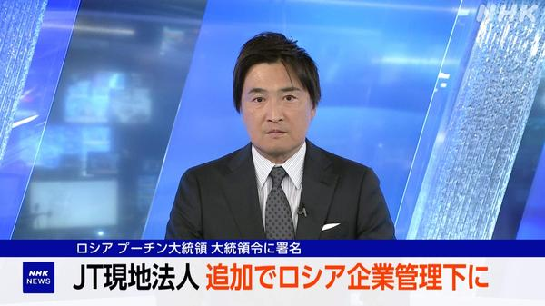
ロシア、JT関連3社を追加で一時管理下に 大統領令で計7社にプーチン大統領はJTグループのロシア現地法人3社を新たに一時管理下に置く大統領令に署名。5日の措置と合わせ対象は計7社となりました。日本側はすでに抗議と撤回を求めています。
出典：NHK
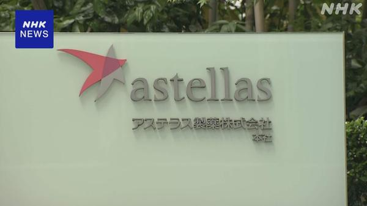
中国で服役のアステラス社員、12月中旬に出所へスパイ活動の罪で懲役3年6か月の判決を受け中国で服役中の大手製薬会社の日本人男性社員が、来月中旬に刑期を終えて出所する見通しとなりました。
出典：NHK
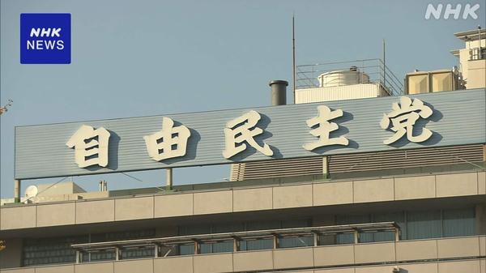
自民執行部、石破氏ら4人に文書で説明要請 消費税減税採決の退席で食料品の消費税減税法案の衆院採決前に石破前首相ら4人が退席したことについて、自民党執行部は「看過できるものではない」として文書での説明を求めました。法案は衆院を通過し参院審議へ進みます。
出典：NHK
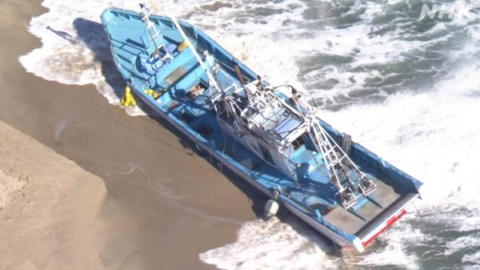
北茨城で漁船が座礁、乗っていた親子の息子と娘が死亡7日、茨城県北茨城市沖で漁船が座礁し親子3人が海に投げ出されるなどして搬送。このうち50代の息子と娘の死亡が確認されました。
出典：NHK
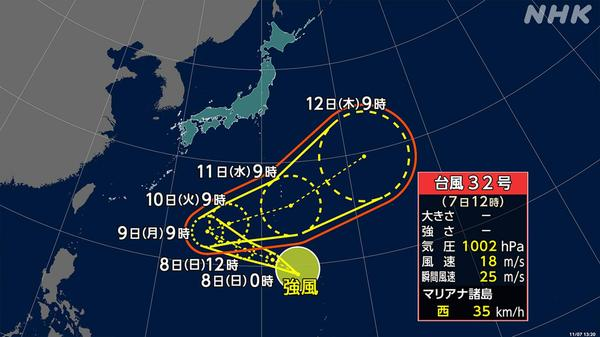
台風32号が発生、年間発生数は1994年以来の多さに7日正午、日本のはるか南で台風32号が発生。年間発生数としては32年前の1994年以来の多さとなり、気象庁は今後の情報への注意を呼びかけています。
出典：NHK
介護現場のカスハラ対策強化へ、厚労省が基準や対応を具体化
利用者や家族からの迷惑行為でサービス継続が難しい場合の判断基準や対応方法を具体化するなど、厚生労働省が介護現場のカスタマーハラスメント対策を強化する方針です。
出典：NHK
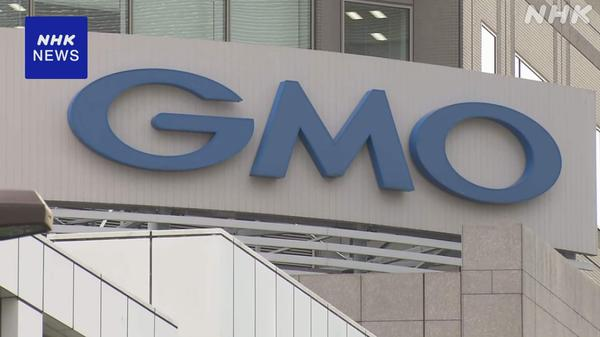
GMO不正アクセス、管理者の全情報アクセス可能リスクが放置されていたGMOインターネットグループへの不正アクセス問題で、2年前に子会社のアクティブディレクトリ経由で管理者が全利用者情報にアクセスできる状態が指摘されながら、十分対策されていなかったことがわかりました。
出典：NHK
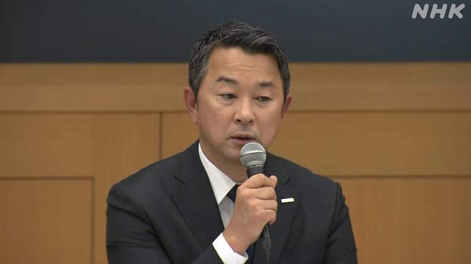
NTTドコモ、最大約29万件の顧客情報流出で社長が陳謝外部からの不正アクセスで最大約29.5万件の顧客情報が流出した問題で、ドコモの前田社長が記者会見で陳謝。見舞金の検討やシステム連携の隙を突かれた手口の説明も行われました。
出典：NHK
🌍 世界の主要ニュース
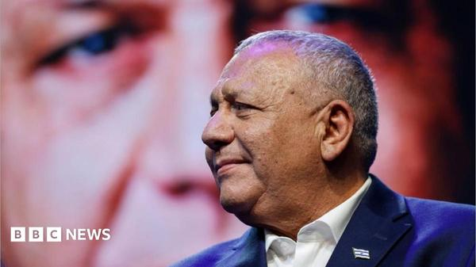
イスラエル大統領、野党のアイゼンコット氏に組閣を要請大統領は野党側のガディ・アイゼンコット氏に新政権樹立を委任。ネタニヤフ首相側も野党側も選挙で過半数を確保できず、首相再任には大きな痛手となります。
出典：BBC／AP
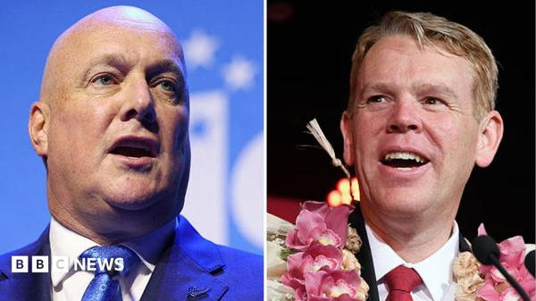
ニュージーランド総選挙、与党第一党と最大野党が接戦7日投開票の総選挙は明確な勝者なし。予備結果では議席が大きく割れ、新興政党を含む連立交渉が今後の政権枠組みを決める見通しです。
出典：BBC／NHK
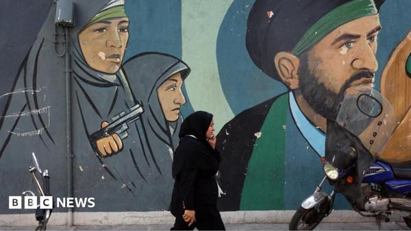
米、イラン核計画情報に最大2000万ドルの懸賞金米国はイランの核計画に関する情報提供に最大2000万ドルの報奨金を提示。トランプ大統領が核施設への再攻撃の可能性に言及するなかでの措置です。
出典：BBC
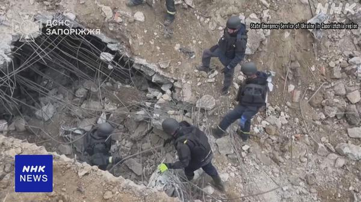
ウクライナ人道支援拠点へのロシア空爆、死者55人に南部の人道支援物資配給拠点を狙ったロシア軍の空爆で、ウクライナ当局はこれまでに55人の死亡を確認したと非難。エネルギー施設などへの大規模攻撃も続いています。
出典：NHK／BBC
パラグアイ、銀行破綻めぐり前大統領を自宅軟禁・起訴
人口の半数近くが口座を持つ大手金融機関の破綻を受け罷免されたサンティアゴ・ペーニャ前大統領が自宅軟禁され、不正容疑などで起訴されました。国内は混乱が続いています。
出典：BBC／AP
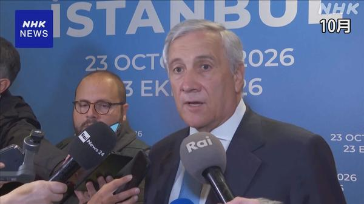
イタリア外相の個人情報が闇サイトに、ウクライナ支援が標的かタヤーニ外相はハッカー集団により個人情報が公開されたと明らかにし、ウクライナ支援が狙われた理由だとの見方を示しました。メロニ首相は親ロシア系ハッカーを非難しています。
出典：NHK／BBC
中国、習近平・トランプ・プーチンの三者会談協議が進むと確認
中国側は、習近平国家主席とトランプ米大統領、プーチン露大統領による歴史的な三者会談に向けた協議が進んでいると確認したとAPが伝えました。
出典：AP
トランプ氏、民主党の「脅迫」調査を指示 具体的証拠は示さず
中間選挙大敗後、トランプ大統領は民主党による「脅迫」があったとして調査を指示したとロイターが報道。証拠の提示はないままの指示とされています。
出典：ロイター
🤖 AIニュース
中間選挙後、マスク氏とデータセンターに逆風 Equityが分析
民主党勝利を受けた規制強化への懸念から、AIデータセンター建設やマスク氏関連案件は厳しい局面に入ったとTechCrunchのEquityが解説。業界全体の政治リスクが焦点です。
出典：TechCrunch
中国がNVIDIA黄CEO監視のため幹部をリクルート、米情報メモ
中国の国家安全部がMegaspeed幹部をリクルートし、NVIDIAのジェンスン・フアンCEOの動向把握を狙ったとする米情報メモが報じられました。
出典：TechCrunch／The Verge
Crusoe、問題を抱えたワイオミングのデータセンター計画をGoogleに売却
AI向け大規模データセンター開発の難しさを象徴する案件として、Crusoeがワイオミング州の問題プロジェクトをGoogleへ売却したと報じられました。
出典：TechCrunch
AnthropicのAIがAI開発を加速、METR報告書に研究者らが警戒
非営利研究機関METRがAnthropic協力でまとめた報告では、AIがより強力なAI開発を加速している実態が示され、研究者の間で強い警戒感が広がっています。
出典：The Verge／ITmedia
米、NVIDIAチップを中国の「空のオフィス」へ輸出許可か
ブラックリスト企業向けチップが実態のない住所へ売られていた可能性が指摘され、商務省やNVIDIAのデューデリジェンス不足への懸念が高まっています。
出典：The Verge
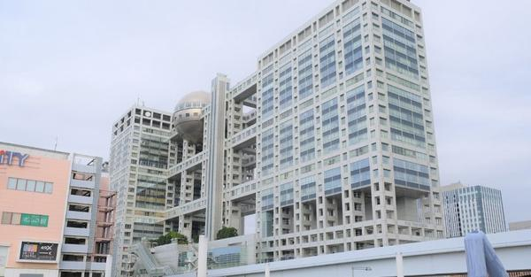
フジテレビ、2027年までに全ドラマで生成AI活用体制へフジテレビは2027年10月までに制作する全ドラマで生成AIを活用できる体制を整えると発表。一部工程では工数を最大8割削減できるとしています。
出典：ITmedia
Airbnb、2027年前半にAI旅行エージェント投入へ
Airbnbは旅程の計画・比較・予約管理を支援するAIエージェントを2027年前半に投入すると表明。旅行者向けアシスタント機能の本格化を目指します。
出典：TechCrunch
Underdog、わずか32MBの音声モデルデモを公開
極小サイズながら音声と音楽の両方を生成できるという32MBの音声モデルをUnderdogがデモ公開。オンデバイス用途への関心が注目されています。
出典：TechCrunch
Anthropic、Claudeに家計管理機能「Personal Finance」をβ提供
Claudeに銀行・カード口座と連携して支出分析ができるPersonal Finance機能が追加され、米国でβ提供が始まりました。
出典：ITmedia
Siri AIの開発者APIが開放、アプリ連携が進む見通し
AppleがSiri向けAI機能の開発者APIを開放し、外部アプリからSiri AIを呼び出せるようになったと報じられました。音声アシスタント連携の幅が広がります。
出典：Gizmodo
💻 PC・ガジェットニュース
香港でiPhone Duo発売日に買い取り狂騒、一時1台12万円の利益も
折りたたみiPhone「iPhone Duo」発売日の香港では、新品を即売却する人が殺到。512GBモデルは一時約12万円の利益が出た一方、昼には相場が急落しました。
出典：ITmedia
Meta、Quest 2とQuest Proの新機能開発を2027年春で終了へ
MetaはQuest 2とQuest Proについて、2027年春をめどに新機能開発を終了する方針。購入済みゲームの扱いや今後のサポートが焦点になります。
出典：Gizmodo
M6搭載の新型iMacレビュー、完成度の高さが際立つ
GizmodoがM6チップ搭載の新型iMacをレビュー。ディスプレイや周辺機器まで揃った完成パッケージとしての魅力とコストパフォーマンスを評価しています。
出典：Gizmodo
LINEがパスキー対応、機種変更やパスワード忘れでもログイン容易に
LINEが生体認証などでログインできるパスキーへ順次対応。OSをまたぐ機種変更時も、パスワードに頼らないログインがしやすくなります。
出典：ITmedia
MSI、軽量化したビジネスノート「Modern LE」14型／16型を投入
MSIがModernシリーズの薄型軽量モデル「Modern LE」を発表。14型と16型をラインアップし、ビジネス用途向けの携帯性を高めています。
出典：PC Watch
MSI、RTX 5080／5090 Laptop搭載の18型ゲーミングノート「Raider A18」
Ryzen 9とGeForce RTX 5080／5090 Laptopを組み合わせたウルトラハイエンド18型ノート「Raider A18」の構成モデルをMSIが発表しました。
出典：ITmedia
「ChatGPT Classic」デスクトップアプリ、2027年1月30日で提供終了
旧来のChatGPT Classicデスクトップアプリが2027年1月30日に提供終了となる見通し。利用者は後継アプリへの移行が必要になります。
出典：ITmedia
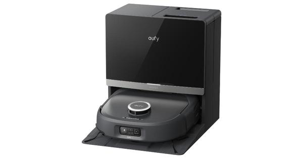
Ankerのeufy、サイクロン搭載ロボット掃除機「Omni E35」Ankerのeufyブランドがサイクロン機構を載せたロボット掃除機Omni E35を投入。お手入れの手間を減らす設計が売りです。
出典：Gizmodo
Amazon「Echo Time」レビュー、睡眠モニター付きスマートクロックの実力
丸い液晶を備えたEcho新モデル「Echo Time」の使い勝手をITmediaが検証。睡眠モニター機能や広告なし表示の利点と気になる点を整理しています。
出典：ITmedia
🔥 Xのトレンド（日本）
ジャンルで絞らず上位20件を掲載。「未確認」はX上の投稿だけを根拠にしたもので、報道機関による裏付けはありません。
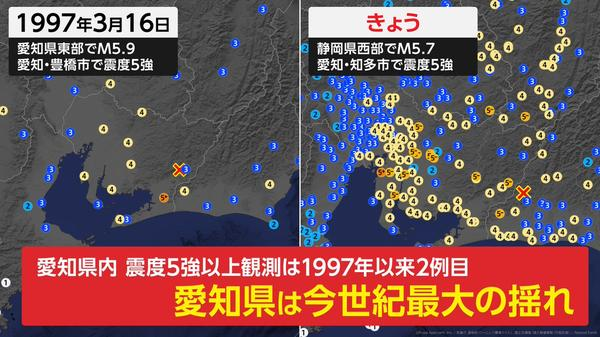
2. 地震大丈夫
深夜の強い揺れのあと、「大丈夫？」「無事？」と安否を気遣う投稿が急増。揺れの大きかった東海地方を中心に、安否確認の合言葉としてトレンド入りしています。
⚠ 未確認（X情報のみ）


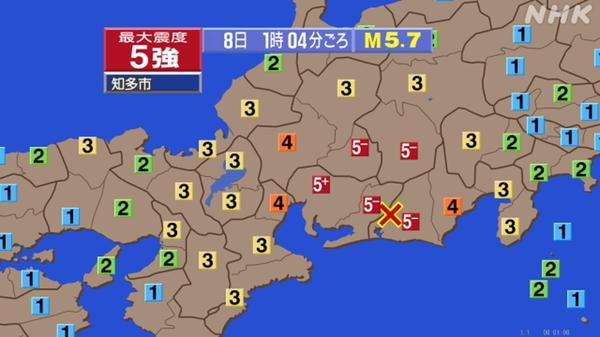
5. 南海トラフ
強い揺れを受け「南海トラフの前兆では」との不安投稿が急増。気象庁はメカニズムが異なり、プレート境界への特段の影響はないとの見解を会見などで示しています。
出典：NHK
日テレ系『ベストアーティスト2026』が11月28日に約5時間の生放送と発表。第1弾に＝LOVE、SixTONES、Mrs. GREEN APPLE、ゆずなどが出演し、総合司会は櫻井翔です。
出典：日テレ公式


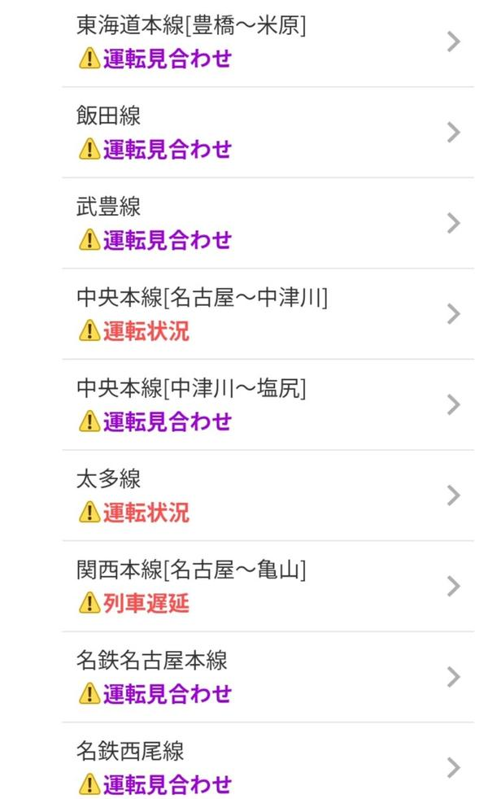
11. 地震のせい
列車遅延や寝坊・予定変更を「地震のせい」に絡めるユーモア投稿が増加。深刻な被害報告と並行し、日常への波及を軽く語る流れがトレンド化しています。
⚠ 未確認（X情報のみ）
12. #ゲンジブANN0
グループ「原因は自分にある。」がニッポン放送『オールナイトニッポン0』に生出演。桜木雅哉・長野凌大・杢代和人・吉澤要人の4人体制でリスナー投稿が急増しています。
出典：ゲンジブ公式
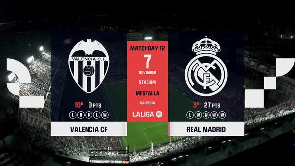
13. バレンシア
ラ・リーガ第12節、バレンシア対レアル・マドリードが日本時間朝にキックオフ。マドリーがアウェーで勝利し、試合実況・ハイライト投稿がトレンド入りしました。
出典：U-NEXTフットボール
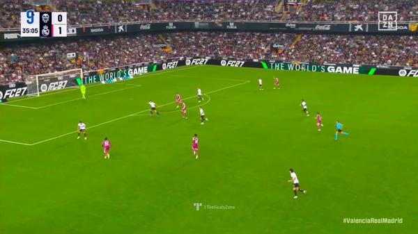
14. ギュレル
レアル・マドリードのアルダ・ギュレルがバレンシア戦でゴールを記録。ベリンガムからのパスを決めるなど活躍し、ファンのゴール動画共有が広がっています。
⚠ 未確認（X情報のみ）

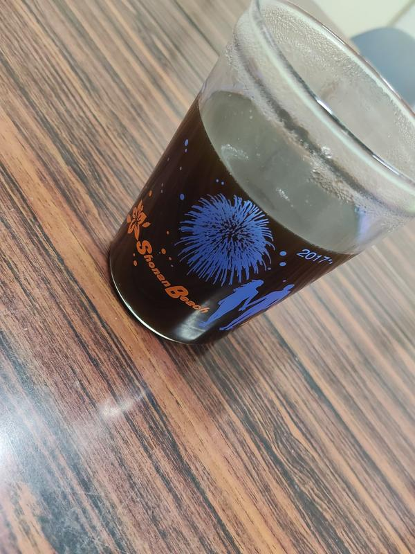
16. #バイザシー
Fm yokohamaの朝番組『SHONAN by the Sea』（秀島史香）のリスナーハッシュタグ。日曜朝のオンエアにあわせ挨拶・曲感想の投稿が集まっています。
⚠ 未確認（X情報のみ）
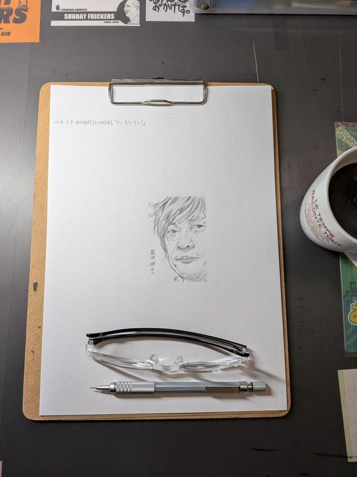
17. #サンフリ
春風亭一之輔・汾陽麻衣のJFN系朝ラジオ『SUNDAY FLICKERS』の略称タグ。日曜早朝のリアタイやラジ描き投稿がトレンド入りしています。
⚠ 未確認（X情報のみ）
Grok Bot がまとめました。